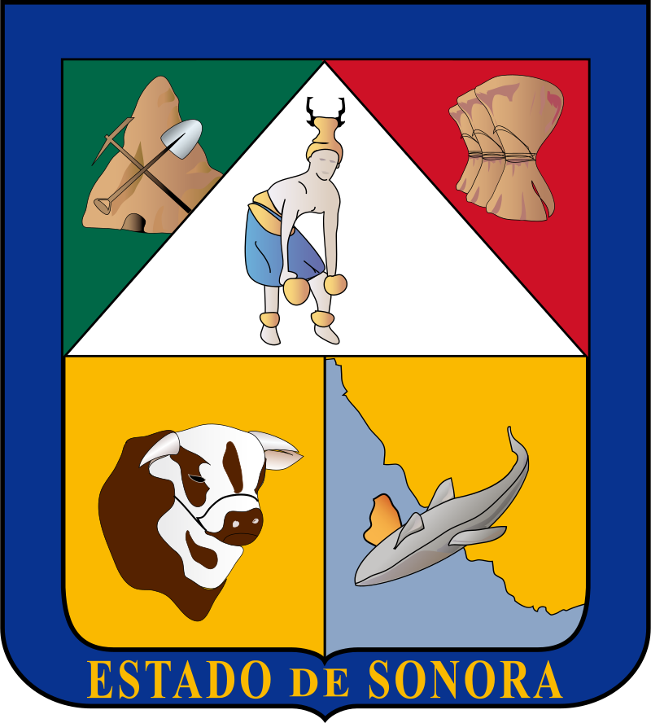

Situación:
El Estado de Sonora no cuenta con una guía estatal propia para elaborar estudios de riesgo
ambiental.
En su lugar, de acuerdo con la Ley del Equilibrio Ecológico y la Protección al Ambiente del Estado de Sonora en su SECCIÓN V se cuenta con la Guía
para la elaboración de la Licencia Ambiental Integral que en su Capítulo II establece la Evaluación de Riesgo Ambiental.
| Fecha de emisión | Contenido |
|---|---|
| N.E. |
|
| Identificación de peligros | Identificación de escenarios. | Jerarquización de riesgos | ||||||||
|---|---|---|---|---|---|---|---|---|---|---|
| AHA | What If | Check List | PHA | FMEA | Árbol de fallos | Árbol de eventos | HAZOP | Índice Dow | Índice Mond | Matriz de Jerarquización |
| X | X | X | X | X | ||||||
| Zona de Riesgo | Zona de Amortiguamiento | ||||
|---|---|---|---|---|---|
| Incendio | Explosión | Toxicidad | Incendio | Explosión | Toxicidad |
| 4 KW/m2 | 1.0 lb/plg2 | IDLH | 1.4 KW/m2 | 0.5 lb/plg2 | TLV 8 o TLV 15 ó 75% del IDLH |